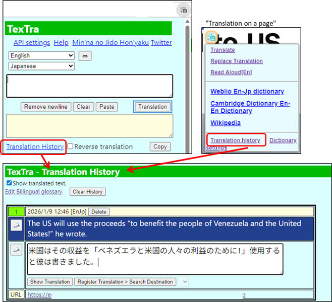
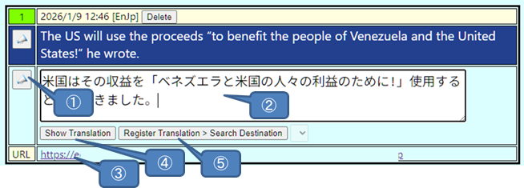

Translation history
The translation history will be
displayed.

① Toggle the visibility of
translations in the history.
Each entry also
has its own “Show Translation” switch.
Useful
for English learning.
② Open the Min'na no Jido
Hon'yaku "Bilingual glossary"
page.

① Read aloud the source text
and the translation.
② You can edit the translation
and save it to the billingual glossary.
③ URL of the
website where the translation was performed.
④ Toggle
the display of the translated text on or off.
⑤ Save
the translation to "Min'na no Jido Hon'yaku".
The
history will be automatically deleted when it exceeds a certain number of
entries.
* The
translations you register will be used to improve the quality of the site's
translation features.
We appreciate your
cooperation.
Press the button once to
search for a destination.
Select a destination, then
press the button again.